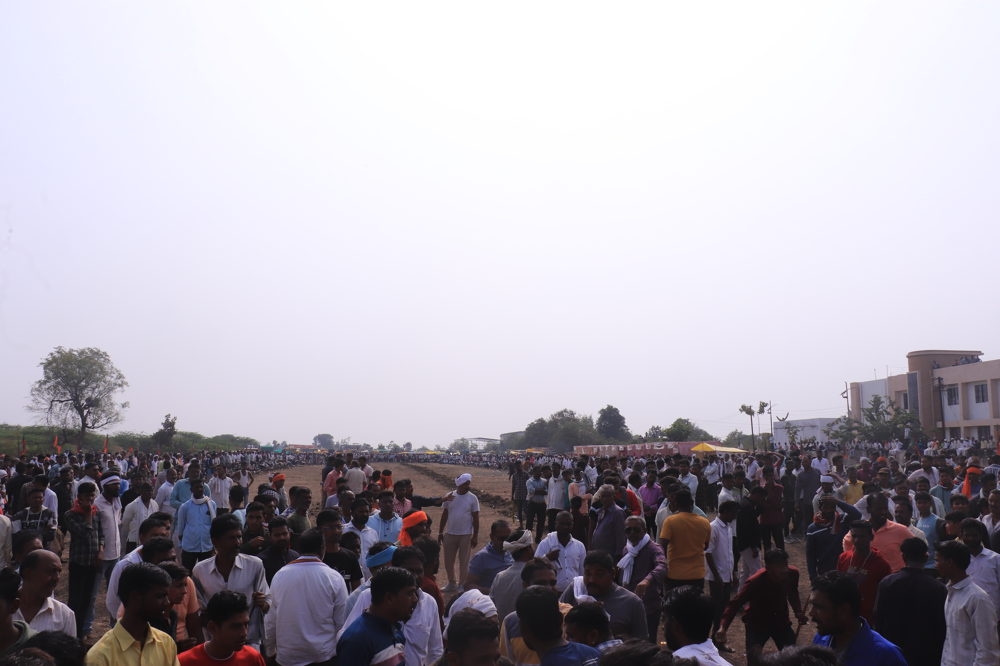

Amravati Programme
Driving change through Healthcare, Sanitation, and Agricultural Innovation in Amravati District.
Maha Arogya Shibir Impact
1 Lakh+ beneficiaries (2022-Present).
Sanitation Training (SBM)
14,735 Members Trained.
Jal Jeevan Mission Focus
Key Resource Center Activities.
Maha Arogya Shibir (Mega Health Camps)
Since 2022, MGD has continuously scaled its efforts. Our flagship "Maha Arogya Shibir" has now examined over 100,000 patients across 17+ villages in the Amravati region.
| Indicator | Achievement |
|---|---|
| Villages Covered | 17+ |
| Camps Organized | 48 |
| Patients Examined | 1,00,000+ |
| Surgeries (Brain, Heart, Eye) | 4,832 |
| Spectacles Distributed | 29,010 |
| Aid Mobilized | ₹2.2 Crores |

Doctors examining patients at a rural camp.

Training Session for Village Water & Sanitation Committee.
Swachh Bharat Mission (SBM 2.0)
As a key implementation partner for the Water & Sanitation Department, Govt. of Maharashtra, we focus on Solid and Liquid Waste Management (SLWM).
Key Achievements (2023-Present)
Conducted orientation and awareness training for 14,735 members of Water and Sanitation Committees across 2,947 Gram Panchayats in Amravati, Gondia, and Hingoli districts.
Infrastructure: We established a production center for Economic Latrines at Amravati and Tiwsa to promote affordable sanitation infrastructure.
Jal Jeevan Mission (JJM)
Maharashtra Gram Darpan is a designated Key Resource Center (KRC) and Implementation Support Agency (ISA) for the Jal Jeevan Mission. We play a pivotal role in ensuring "Har Ghar Jal" (Water for Every Household).
- Capacity Building: Training members of Village Water & Sanitation Committees (VWSC) on water quality monitoring and scheme maintenance.
- Community Mobilization: Conducting IEC (Information, Education, Communication) activities to promote water conservation.
- Technical Support: Assisting in the preparation of Village Action Plans (VAP) for sustainable water supply.

Training session for Jal Jeevan Mission implementation.
Agriculture & Environmental Sustainability

"Silt-Free Dam" (Gaal Mukta Dharan)
Ordered by the Agriculture Department, MGD removed tons of silt from the village dam. This silt, rich in nutrients, was applied to farmers' fields, increasing crop yield while restoring the dam's water storage capacity.

"Shankar Pat" (Agricultural Fair)
A unique event organized to exchange agricultural knowledge and relieve farmer stress. It fosters community bonding with active participation from women and competitors from neighboring districts.

Tree Plantation Drive
Implemented extensive roadside plantation projects along the Amravati-Nagpur Highway. This initiative focuses on increasing green cover and ecological balance.
Financial Inclusion (NABFINS)
From 2015 to 2018, Maharashtra Gram Darpan acted as a Business Correspondent for NABARD Financial Services (NABFINS).
- Facilitated bank linkages for Self Help Groups (SHGs).
- Managed loan distribution and recovery processes across Amravati district.
- Ensured financial literacy among rural women borrowers.

Media Coverage & Recognition
Highlights of our work featured in leading newspapers like Lokmat, Sakal, and Deshunnati.